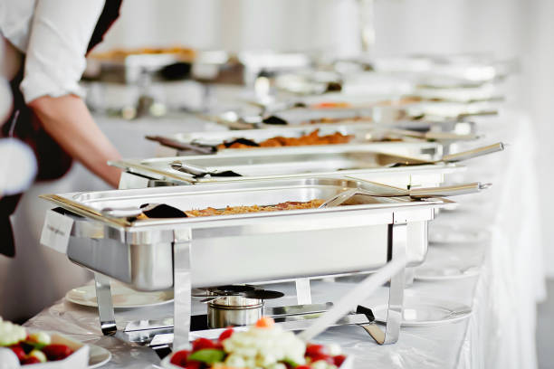
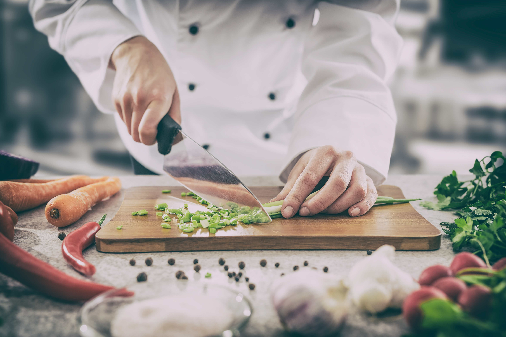
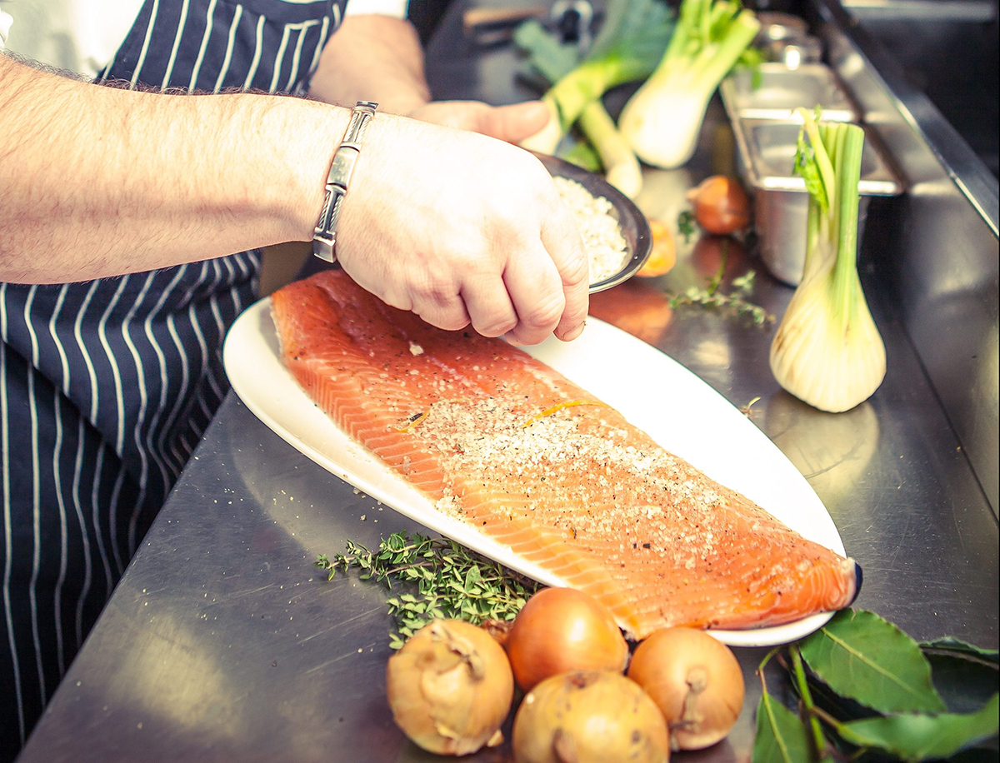
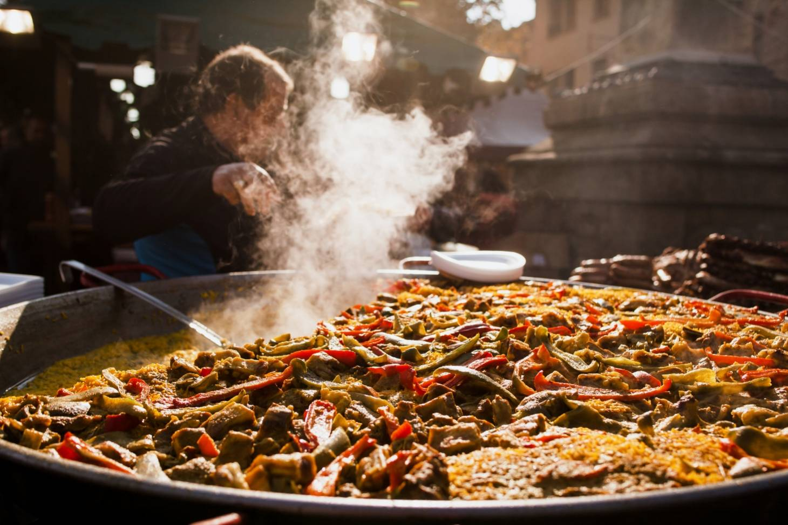

Welkom Bij Food And Joy!
Food and Joy levert culinair maatwerk. Hierbij laten we de ervaring en inspiratie van Chef-kok Jerry van der Graaf graag samenvloeien aan al u wensen. Food and Joy biedt uiteenlopende concepten, waardoor er voor een ieder wat wils is, en ruime mogelijkheden voor elk budget. Door een jarenlange ervaring komt Food and Joy met een vakkundige oplossing voor al u wensen.
Met passie en precisie zorgt ons team ervoor dat elk evenement, groot of klein, tot in de puntjes verzorgd is. Van informele bijeenkomsten tot exclusieve feesten, Food and Joy biedt niet alleen heerlijke gerechten, maar ook een service die uw verwachtingen overtreft. Ons brede aanbod, dat varieert van verfijnde walking dinners tot thematische buffetten, wordt altijd afgestemd op de specifieke wensen van u en uw gasten.
Chef-kok Jerry van der Graaf staat bekend om zijn creativiteit en vakmanschap. Hij combineert klassieke kooktechnieken met moderne invloeden, waardoor hij steeds verrassende en verfijnde menu's weet te presenteren. Of u nu kiest voor een uitgebreid buffet, een intieme lunch of een BBQ, elk gerecht wordt met dezelfde aandacht en zorg bereid. Wij geloven dat goede catering niet alleen draait om smaak, maar ook om beleving, daarom zetten we in op unieke culinaire ervaringen.
Over Food and Joy
Catering
Op zoek naar een unieke cateringvaring?
Bij Food and Joy creëren we samen met u een uniek culinair concept voor elke gelegenheid. Van buffetten tot luxe hapjes, wij zorgen voor een smaakvolle ervaring.
Of het nu gaat om een zakelijke bijeenkomst of een feestelijke gelegenheid, wij luisteren naar uw wensen en maken deze waar.

Freelance
Freelancer nodig?
Op zoek naar flexibele ondersteuning in uw restaurant of cateringbedrijf? Food and Joy biedt de mogelijkheid om ervaren freelance koks in te huren voor tijdelijke klussen.
Ontdek de voordelen van het werken met onze professionals en hoe wij u kunnen helpen tijdens drukke momenten.

Homecooking
Thuis Koken met Stijl
Geniet van een zorgeloze culinaire ervaring bij u thuis. Van een intieme lunch tot een feestelijk diner, wij helpen u met al uw wensen en ideeën.
Onze chefs creëren een menu dat perfect past bij uw gelegenheid, zodat u zich kunt richten op uw gasten. Laat ons het koken, serveren en zelfs het opruimen voor u verzorgen, zodat u volop kunt genieten van een onvergetelijke dag!

Evenementen
Wilt u een culinair evenement?
Heeft u een evenement waarvoor u een unieke culinaire invulling zoekt? Bij Food and Joy bieden we diverse mogelijkheden waarbij live cooking centraal staat.
Of het nu gaat om een barbecue, een pizzaoven of een lemonadebar, wij zorgen voor een onvergetelijke ervaring voor u en uw gasten. Klik hier om te ontdekken hoe wij uw evenement kunnen verrijken!

Freelance kok inhuren?
Bent u op zoek naar een vakkundige en flexibele freelance kok?
Ontdek de diensten van Jerry van der Graaf van Food and Joy.
Jerry is breed inzetbaar, en staat klaar om uw keuken te versterken. Vraag direct een offerte aan, of neem contact op via 06 18 93 88 56 voor meer informatie!